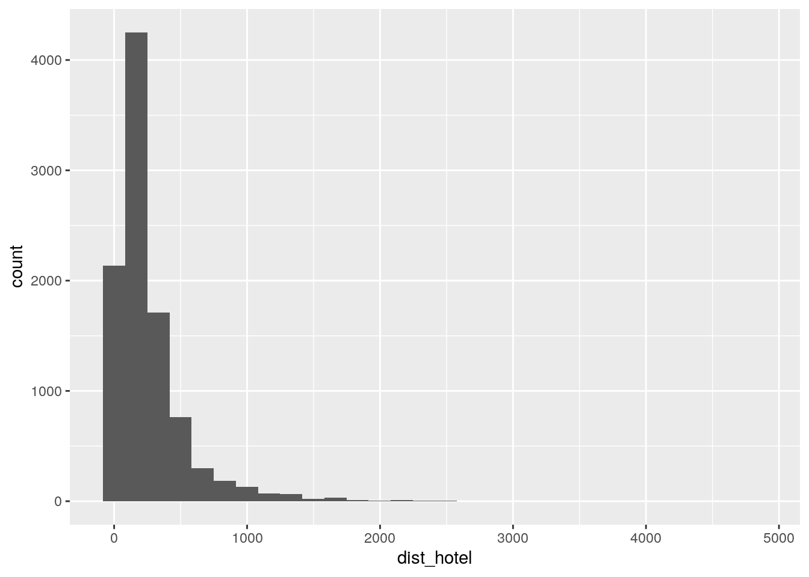

Capítulo 2 Geoprocesamiento
Cuando tenemos información geográfica y queremos manipularla para generar nuevos datos que nos permitan hacer análisis espaciales, debemos utilizar diferentes herramientas de geoprocesamiento.
Los geoprocesos son operaciones que se llevan a cabo con capas geográficas, que para nosotros toman la forma de dataframes espaciales. Algunas de estas operaciones se aplican a una sola capa geográfica (como agregar un área de influencia alrededor de un polígono), y otras a varias (como calcular la interseción entre una línea y un polígono, o estimar la distancia entre dos puntos). Existen operaciones para unir, recortar, disolver, borrar, fusionar, interseccionar, y calcular áreas de influencia (llamadas buffers), entre otras. En este capítulo aprenderemos a usar varias de ellas, incluidas en el paquete sf.
2.1 Cruces espaciales
Hay ocasiones en que necesitamos cruzar datos de fuentes distintas en base a su ubicación geográfica. Es decir, un “join” que cruce registros en base a sus coordenadas espaciales, en lugar de otros atributos.
Aquí va un ejemplo como guía para realizar el spatial join, o join espacial, que sólo puede ser realizado entre dataframes de tipo espacial.
Paquetes que vamos a usar:
2.2 Dataframes tradicionales y dataframes espaciales
Vamos a trabajar con dos datasets.
Uno contiene los alojamientos ofrecidos por Airbnb en Buenos Aires en Julio 2017.
airbnb <- read.csv("https://query.data.world/s/55amvafrknrgkeyeiu54yb2c6u6brc",
stringsAsFactors = FALSE,
encoding = "UTF-8")
names(airbnb)## [1] "room_id" "host_id" "room_type"
## [4] "country" "city" "neighborhood"
## [7] "address" "reviews" "overall_satisfaction"
## [10] "accommodates" "bedrooms" "bathrooms"
## [13] "price" "deleted" "minstay"
## [16] "last_modified" "latitude" "longitude"
## [19] "survey_id" "location" "coworker_hosted"
## [22] "extra_host_languages" "name" "property_type"
## [25] "currency" "rate_type"Y el otro contiene los polígonos de las comunas porteñas:
## Reading layer `CABA_comunas' from data source `https://bitsandbricks.github.io/data/CABA_comunas.geojson' using driver `GeoJSON'
## Simple feature collection with 15 features and 4 fields
## geometry type: MULTIPOLYGON
## dimension: XY
## bbox: xmin: -58.53152 ymin: -34.70529 xmax: -58.33514 ymax: -34.52754
## epsg (SRID): 4326
## proj4string: +proj=longlat +datum=WGS84 +no_defsNotemos que tenemos dos tipos de dataframe distintos. El de Airbnb es un dataframe “tradicional”, dado que todas sus columnas contiene valores simples: un número, un texto, un factor, etc.
El dataframe de comunas es especial porque es “espacial”. Contiene una columna distinta a las demás, llamada “geometry” que en lugar de una observación simple contiene una lista con múltiples posiciones. Estas posiciones son los vértices que definen el polígono de cada comuna, y permiten la proyección en mapas y el cálculo de estadísticas espaciales.
2.2.1 Combinando datasets con información espacial
Si lo único que queremos es visualizar en forma combinada la información que contienen, no hay problema en que un dataframe sea espacial y otro no, siempre y cuando éste último incluya una columna con latitud y otra con longitud para identificar la posición de cada registro.
Dado que los datos de Airbnb incluyen lat/long, es fácil visualizarlos en conjunto con el dataframe espacial de las comunas:
ggplot() +
geom_sf(data = comunas) +
geom_point(data = airbnb,
aes(x = longitude, y = latitude),
alpha = .3,
color = "orange")
Dicho esto, si lo que queremos es combinar la información para su análisis cuantitativo, no nos alcanza con la visualización. Lo que tenemos que hacer es un “join espacial”, la técnica que permite cruzar datasets en base a sus atributos de ubicación geográfica.
Sólo es posible hacer joins espaciales entre dataframes espaciales. Es por eso que los datos de Airbnb, así como están, no sirven para un join. ¡Pero! una vez más, dado que incluyen columnas de latitud y longitud, la solución es fácil. Podemos usar las columnas de lat/long para convertirlo en un dataset espacial hecho y derecho, así:
airbnb <- airbnb %>%
filter(!is.na(latitude), !is.na(longitude)) %>%
st_as_sf(coords = c("longitude", "latitude"), crs = 4326)Tres cosas importantes a tener en cuenta:
- Un dataframe espacial no permite filas sin posición (sin coordenadas). Por eso antes de la conversión usamos filter(!is.na(latitude), !is.na(longitude)) para descartar los registros sin coordenadas del dataset de origen si los hubiera.
- La función st_as_sf() es la que toma un dataframe común y lo transforma en uno espacial. Con el parámetro coords = c(“longitude”, “latitude”) le definimos como se llaman las columnas de longitud y latitud, en ese orden. Obsérvese que toma los nombres entre comillas.
- El último parámetro, “crs”, es obligatorio y requiere el identificador del sistema de referencia de las coordenadas. Cuando se trata de datos capturados en internet (como aquí, por scraping del sitio de Airbnb), el crs siempre es 4326. Ahora que ambos dataframes son de tipo espacial, ambos se grafican con geom_sf()

y más importante aún, se pueden combinar con un join espacial. La versión más simple, que combina atributos de las filas cuyas posiciones coinciden en el espacio, es así:
El resultado es un dataframe con datos de Airbnb, que en cada fila incluye los datos de la comuna con la que coincide el alojamiento:
## Simple feature collection with 6 features and 28 fields
## geometry type: POINT
## dimension: XY
## bbox: xmin: -58.41829 ymin: -34.62068 xmax: -58.37914 ymax: -34.59101
## epsg (SRID): 4326
## proj4string: +proj=longlat +datum=WGS84 +no_defs
## room_id host_id room_type country city neighborhood
## 1 15125458 95870458 Private room NA NA NA
## 2 1691316 3380366 Private room NA NA NA
## 3 16069975 104686791 Private room NA NA NA
## 4 4470484 2034113 Private room NA NA NA
## 5 3564816 17949594 Private room NA NA NA
## 6 4479962 8875440 Private room NA NA NA
## address reviews overall_satisfaction accommodates bedrooms
## 1 Recoleta, Buenos Aires 23 4.5 1 1
## 2 Palermo, Buenos Aires 106 5.0 2 1
## 3 Recoleta, Buenos Aires 5 5.0 1 1
## 4 Buenos Aires 102 4.5 2 1
## 5 San Nicolás, Buenos Aires 20 4.5 1 1
## 6 Balvanera, Буэнос-Айрес 102 4.5 2 1
## bathrooms price deleted minstay last_modified survey_id
## 1 NA 339 0 NA 2017-07-03T17:52:23Z 1
## 2 NA 559 0 NA 2017-07-03T17:52:26Z 1
## 3 NA 254 0 NA 2017-07-03T17:52:26Z 1
## 4 NA 441 0 NA 2017-07-03T17:52:26Z 1
## 5 NA 390 0 NA 2017-07-03T17:52:26Z 1
## 6 NA 424 0 NA 2017-07-03T17:52:26Z 1
## location coworker_hosted
## 1 0101000020E61000000FB743C362324DC0B1DEA815A64B41C0 NA
## 2 0101000020E6100000780E65A88A354DC08A027D224F4C41C0 NA
## 3 0101000020E610000002D4D4B2B5324DC0B5C2F4BD864C41C0 NA
## 4 0101000020E6100000187C9A9317314DC04293C492724F41C0 NA
## 5 0101000020E61000004FC939B187304DC03D29931ADA4C41C0 NA
## 6 0101000020E6100000A6272CF180324DC0A88FC01F7E4E41C0 NA
## extra_host_languages name property_type
## 1 {en} Habitacion privada en Recoleta Apartment
## 2 {en} Palermo Cozy room wprivate bathroom House
## 3 {en} Habitacion Recoleta, Confort Condominium
## 4 {} The Flan Room- Palacio Nr San Telmo House
## 5 {en} "Antique" room @ El Centro Apartment
## 6 {} Private room - Congreso House
## currency rate_type
## 1 ARS nightly
## 2 ARS nightly
## 3 ARS nightly
## 4 ARS nightly
## 5 ARS nightly
## 6 ARS nightly
## barrios
## 1 RECOLETA
## 2 PALERMO
## 3 RECOLETA
## 4 CONSTITUCION - MONSERRAT - PUERTO MADERO - RETIRO - SAN NICOLAS - SAN TELMO
## 5 CONSTITUCION - MONSERRAT - PUERTO MADERO - RETIRO - SAN NICOLAS - SAN TELMO
## 6 BALVANERA - SAN CRISTOBAL
## perimetro area comunas geometry
## 1 21246.61 6140873 2 POINT (-58.39364 -34.59101)
## 2 21768.07 15772496 14 POINT (-58.41829 -34.59616)
## 3 21246.61 6140873 2 POINT (-58.39617 -34.59786)
## 4 35572.65 17802807 1 POINT (-58.38353 -34.62068)
## 5 35572.65 17802807 1 POINT (-58.37914 -34.60041)
## 6 10486.26 6385991 3 POINT (-58.39456 -34.61322)Con los atributos adicionales, podemos realizar sumarios por comuna de los alojamientos:
## Simple feature collection with 16 features and 2 fields
## geometry type: GEOMETRY
## dimension: XY
## bbox: xmin: -58.7976 ymin: -34.82524 xmax: -58.18856 ymax: -34.41952
## epsg (SRID): 4326
## proj4string: +proj=longlat +datum=WGS84 +no_defs
## # A tibble: 16 x 3
## comunas cantidad geometry
## * <fct> <int> <GEOMETRY [°]>
## 1 1 2100 MULTIPOINT (-58.39242 -34.60016, -58.39235 -34.60115, -58.3…
## 2 10 18 MULTIPOINT (-58.52669 -34.62379, -58.52227 -34.61793, -58.5…
## 3 11 34 MULTIPOINT (-58.52372 -34.60679, -58.51784 -34.61295, -58.5…
## 4 12 163 MULTIPOINT (-58.51262 -34.58124, -58.50698 -34.56917, -58.5…
## 5 13 670 MULTIPOINT (-58.47438 -34.53906, -58.47433 -34.55242, -58.4…
## 6 14 3281 MULTIPOINT (-58.44776 -34.56799, -58.44745 -34.56847, -58.4…
## 7 15 500 MULTIPOINT (-58.49529 -34.593, -58.48774 -34.58506, -58.486…
## 8 2 1659 MULTIPOINT (-58.41587 -34.59755, -58.41514 -34.5967, -58.41…
## 9 3 468 MULTIPOINT (-58.41385 -34.61058, -58.41363 -34.60651, -58.4…
## 10 4 136 MULTIPOINT (-58.4205 -34.64693, -58.42022 -34.64792, -58.41…
## 11 5 422 MULTIPOINT (-58.4313 -34.6024, -58.43129 -34.60154, -58.431…
## 12 6 184 MULTIPOINT (-58.45786 -34.60974, -58.45726 -34.61023, -58.4…
## 13 7 62 MULTIPOINT (-58.47123 -34.62169, -58.47018 -34.62031, -58.4…
## 14 8 1 POINT (-58.46999 -34.66616)
## 15 9 15 MULTIPOINT (-58.5287 -34.64678, -58.52213 -34.63636, -58.51…
## 16 <NA> 210 MULTIPOINT (-58.7976 -34.66354, -58.69091 -34.47598, -58.68…El resultado de un join espacial también es un dataframe espacial, así que podemos visualizarlo de la manera habitual (y ahora tenemos más variables para graficar).
2.2.2 Coropletas
Hasta acá obtuvimos un dataframe espacial con la geometría de puntos proveniente de los datos de Airbnb y generamos una nueva columna que indica a que Comuna pertenece cada uno de los registros. Sin embargo, cuando tenemos muchos puntos concentrados en un mapa resulta difícil realizar un análisis visual que nos permita sacar conclusiones de los datos. Para esto nos sirven las coropletas o mapas coropléticos, que muestran áreas geográficas (polígonos) coloreadas según alguna de las variables incluidas en el dataset.
Continuando con el análisis de Airbnb, haremos un mapa coroplético dándole color a cada Comuna según la cantidad de propiedades que hay en alquiler.
Veamos esto en detalle: Lo primero que debemos hacer es filtrar solo las propiedades que se ubican dentro de CABA y agruparlas por Comuna calculando la cantidad de observaciones que contiene cada una:
comunas_airbnb <- airbnb_con_comunas %>%
filter(!is.na(comunas)) %>%
group_by(comunas) %>%
summarise(cantidad=n())Ahora quitemos la geometría de los puntos (columna geometry), que ya no la necesitaremos, y dejemos nuestro dataframe espacial como un dataframe tradicional:
## # A tibble: 6 x 2
## comunas cantidad
## <fct> <int>
## 1 1 2100
## 2 10 18
## 3 11 34
## 4 12 163
## 5 13 670
## 6 14 3281Listo, juntemos la información que nos interesa de ambos dataframes a partir de un left_join() entre el shape original con los polígonos de las Comunas y los datos que agrupamos en el paso anterior:
## Simple feature collection with 6 features and 5 fields
## geometry type: MULTIPOLYGON
## dimension: XY
## bbox: xmin: -58.4627 ymin: -34.6625 xmax: -58.33514 ymax: -34.56935
## epsg (SRID): 4326
## proj4string: +proj=longlat +datum=WGS84 +no_defs
## barrios
## 1 CONSTITUCION - MONSERRAT - PUERTO MADERO - RETIRO - SAN NICOLAS - SAN TELMO
## 2 RECOLETA
## 3 BALVANERA - SAN CRISTOBAL
## 4 BARRACAS - BOCA - NUEVA POMPEYA - PARQUE PATRICIOS
## 5 ALMAGRO - BOEDO
## 6 CABALLITO
## perimetro area comunas cantidad geometry
## 1 35572.65 17802807 1 2100 MULTIPOLYGON (((-58.36854 -...
## 2 21246.61 6140873 2 1659 MULTIPOLYGON (((-58.39521 -...
## 3 10486.26 6385991 3 468 MULTIPOLYGON (((-58.41192 -...
## 4 36277.44 21701236 4 136 MULTIPOLYGON (((-58.3552 -3...
## 5 12323.47 6660526 5 422 MULTIPOLYGON (((-58.41287 -...
## 6 10990.96 6851029 6 184 MULTIPOLYGON (((-58.43061 -...Ya estamos en condiciones de hacer nuestro primer mapa coroplético a partir de la unión de un dataframe espacial y un dataframe tradicional. Para reconocer fácilmente las comunas, agreguemos etiquetas con geom_sf_text():
ggplot() +
geom_sf(data = comunas, aes(fill=cantidad)) +
geom_sf_text(data=comunas, aes(label = comunas), size=2.5, colour = "black") +
labs(title = "Oferta de Airbnb por Comuna",
subtitle = "Propiedades publicadas",
fill = "Cantidad",
caption= "Fuente: Airbnb 2017",
y="",
x="") +
scale_fill_gradient(low="khaki2", high="deeppink4")Tal como se ve en el mapa, a lo largo del corredor Norte de la Ciudad, y más específicamente en la Comuna 14, es donde Airbnb tiene la mayor cantidad de propiedades publicadas. Esto tiene sentido ya que Airbnb es un servicio orientado a turistas, y estas Comunas son las que tienen la mayor cantidad de atracciones turísticas.
Sin embargo, para que estos datos sean comparables entre las 15 Comunas, relacionemos la cantidad de observaciones que tienen con la superficie (ha) de cada una:
ggplot() +
geom_sf(data = comunas, aes(fill=(cantidad/area)*10000)) +
geom_sf_text(data=comunas, aes(label = comunas), size=2.5, colour = "black")+
labs(title = "Oferta de Airbnb por Comuna",
subtitle = "Densidad de propiedades publicadas",
fill = "Cantidad por ha",
caption= "Fuente: Airbnb 2017",
y="",
x="") +
scale_fill_gradient(low="khaki2", high="deeppink4")Aquí pudimos ver que los resultados son similares a los del primer mapa coroplético, y que el corredor Norte sigue siendo la zona donde se concentra la mayor parte de la oferta. Pero si tenemos en cuenta la superficie total de las Comunas, notamos que la 2 (Recoleta) es la que más densidad de observaciones tiene, seguida por la Comuna 14.
2.3 Uniones
Cuando realizamos análisis espaciales, es muy común que nos encontremos con la necesidad de combinar información geográfica. Esto se resuelve fácilmente a partir de un geoproceso llamado unión, que en el paquete sf lo encontraremos como st_union. Esta herramienta tiene 2 funcionalidades:
Unir registros de una misma capa, generando un único dato.
Unir las geometrías de dos capas, generando una capa única que contenga la información de ambas.
Empecemos combinando los registros de nuestro dataframe espacial de comunas de manera tal que generemos un nuevo dataframe que contenga un único polígono de la Ciudad:
Veamos cuantos registros tiene el dataframe de comunas:
## [1] 15 6Revisemos el resultado de nuestra unión:
## [1] 1 1Efectivamente, pasamos de tener registros para las 15 comunas, a tener tan solo 1. Pero veamos esto en un mapa para entender mejor como funciona la unión:
Tal como lo imaginamos, en el mapa vemos que se unieron las 15 Comunas y ya no aparecen sus límites. Quedó un solo polígono con la forma de toda la Ciudad.
Pero esto no es todo. Como se mencionó anteriormente, también se pueden combinar/unir capas diferentes, generando un único dataframe espacial. Por ejemplo, seleccionemos las 2 comunas con mayor densidad de publicaciones de Airbnb y generamos un dataframe para cada una:
Veamos como lucen:
ggplot()+
geom_sf(data=comuna_2)+
geom_sf_text(data=comuna_2, aes(label = comunas), size=4, colour = "black")+
geom_sf(data=comuna_14)+
geom_sf_text(data=comuna_14, aes(label = comunas), size=4, colour = "black")Y ahora unamos:

Como se puede ver en el mapa, al aplicar st_union se combinaron las 2 comunas que estaban en dataframes separados y se generó un único dataframe espacial con toda la información.
2.4 Intersecciones
Muchas veces nos encontramos con que 2 capas geográficas se solapan y queremos obtener como resultado los datos que se intersectan. Para este tipo de análisis, utilizamos st_intersection de nuestro ya conocido paquete sf.
Hacer una intersección entre 2 capas significa que ambas geometrías serán recortadas, generando una nueva capa que contenga solo las entidades que se encuentran superpuestas.
Llevemos esto a datos reales y veamos un ejemplo de como crear un dataframe que contenga solo las observaciones de Airbnb que intersecten con el polígono de CABA creado en el paso anterior, y así eliminar todos los registros ubicados en AMBA.
## [1] 9923 29Antes de aplicar la función, nos encontramos con que hay un total de 9.923 observaciones. Veamos que sucede después:
## [1] 9713 29Según los resultados obtenidos, son 9.713 las observaciones que pertenecen a la Ciudad. Veamos esto en un mapa:
ggplot()+
geom_sf(data=caba) +
geom_sf(data=airbnb_con_comunas, size=0.75, alpha = .3, color="orange")Listo, todo funcionó bien asi que ya tenemos nuestro dataframe espacial de Airbnb recortado a partir de una intersección espacial con CABA.
Ahora hagamos una prueba más e intersectemos solo con las observaciones localizadas en las Comunas 2 y 14 filtradas anteriormente:
ggplot() +
geom_sf(data=comunas) +
geom_sf(data=airbnb_comuna_14_2, aes(color=comunas), size=0.4, alpha=0.3)## [1] 4940 39De las 9.713 observaciones que vimos que caen en CABA, 4.940 caen en las comunas analizadas. Tal como era de esperar, esto representa más de un 50% de la muestra.
2.5 Distancias
Ahora veamos como calcular distancias euclideanas entre datos espaciales, lo cual resulta muy útil a la hora de comprender como se organizan y relacionan entre sí diferentes entidades geográficas. Es decir que, esta herramienta nos permitirá agregar información a nuestros datos a partir de la relación espacial que tienen con otros datos. En sf, esto lo encontraremos bajo el nombre de st_distance.
Comencemos con algo simple: Calculemos la distancia que hay entre los centroides de las 2 comunas con mayor densidad de oferta de Airbnb. Para establecer un único punto en cada comuna y poder realizar el cálculo, vamos a utilizar sus centroides que los calcularemos con la función st_centroid:
Veamos el resultado en un mapa:
ggplot()+
geom_sf(data=comunas, color="gray")+
geom_sf(data=comuna_2, color="red", shape=4, stroke=2, size=1)+
geom_sf(data=comuna_14, color="blue", shape=4, stroke=2, size=1)Y ahora calculemos la distancia entre ambos:
## Units: [m]
## [,1]
## [1,] 2847.48Nos encontramos con que la distancia lineal entre el centroide de la Comuna 2 y el de la Comuna 14 es de 2.847,48 metros, es decir, unas 28 cuadras aproximadamente.
Veamos un ejemplo más: Veamos a cuántos metros del centroide de la Comuna 2 se encuentran el resto de propiedades publicadas. Calcularemos el resultado en una nueva columna de nuestro dataframe llamada dist_comuna2:
airbnb_con_comunas <- airbnb_con_comunas %>%
mutate(dist_comuna2 = st_distance(airbnb_con_comunas, comuna_2))Analicemos los resultados:
## V1
## Min. : 21.92
## 1st Qu.: 1786.36
## Median : 2928.83
## Mean : 3202.80
## 3rd Qu.: 4149.21
## Max. :13963.07Vemos que las propiedades más cercanas, se ubican a 21,92 metros, y las más lejanas a 13.963,07 metros. En promedio, todos los registros están ubicados a 3.202,8 metros del centroide de la Comuna 2, es decir, aproximadamente 32 cuadras.
Revisemos la distribución en un histograma:

Y en un mapa:
ggplot()+
geom_sf(data=caba, color="gray")+
geom_sf(data=airbnb_con_comunas, aes(color=as.numeric(dist_comuna2)))+
geom_sf(data=comuna_2, fill=NA, shape=4, stroke=2, size=1.5)+
scale_color_viridis_c(direction = -1)+
labs(title="Distancia a la Comuna 2",
subtitle="Oferta Airbnb 2017",
color="Distancia",
x="",
y="")Tanto en el histograma como en el mapa se aprecia perfectamente como la mayoría de las propiedaddes se ubican a menos de 5.000 metros del centroide de la Comuna.
Bonus Track Hagamos un poco más complejo el análisis aprovechando que los datos que estamos analizando en este capítulo pertenecen a la oferta de alquileres turísticos, y calculemos la distancia entre cada una de las propiedades publicadas en Airbnb y cada uno de los hoteles de la Ciudad, para entender si hay similitudes en como se distribuyen ambas ofertas en el territorio. Esto será posible a partir del armado de una función que nos permita calcular y filtrar la distancia de cada una de las propiedades publicadas en Airbnb al hotel más cercano.
Primero cargamos el dataset de hoteles que está publicado en le portal de datos abiertos de GCBA:
hoteles <- read.csv("http://cdn.buenosaires.gob.ar/datosabiertos/datasets/alojamientos-turisticos/alojamientos-turisticos.csv",
encoding = "UTF-8")Y lo convertimos a shape como ya aprendimos:
hoteles <- hoteles %>%
filter(!is.na(lat), !is.na(long)) %>%
st_as_sf(coords = c("long", "lat"), crs = 4326)Luego creamos una nueva columna en donde calculamos la distancia de cada propiedad a cada hotel, pero nos quedamos únicamente con la distancia a la estación más cercana.
airbnb_con_comunas <- airbnb_con_comunas %>%
mutate(dist_hotel = apply(st_distance(airbnb_con_comunas, hoteles), 1, function(x) min(x)))Revisemos como se ve el resultado obtenido:
## Simple feature collection with 6 features and 3 fields
## geometry type: POINT
## dimension: XY
## bbox: xmin: -58.41829 ymin: -34.62068 xmax: -58.37914 ymax: -34.59101
## epsg (SRID): 4326
## proj4string: +proj=longlat +datum=WGS84 +no_defs
## room_type name dist_hotel
## 1 Private room Habitacion privada en Recoleta 142.02029
## 2 Private room Palermo Cozy room wprivate bathroom 162.42654
## 3 Private room Habitacion Recoleta, Confort 116.76407
## 4 Private room The Flan Room- Palacio Nr San Telmo 38.54021
## 5 Private room "Antique" room @ El Centro 90.17597
## 6 Private room Private room - Congreso 203.75457
## geometry
## 1 POINT (-58.39364 -34.59101)
## 2 POINT (-58.41829 -34.59616)
## 3 POINT (-58.39617 -34.59786)
## 4 POINT (-58.38353 -34.62068)
## 5 POINT (-58.37914 -34.60041)
## 6 POINT (-58.39456 -34.61322)## Min. 1st Qu. Median Mean 3rd Qu. Max.
## 1.408 91.583 169.227 260.199 318.691 4828.336La mínima distancia entre una propiedad publicada en Airbnb y un hotel es de 1,4 metros y la máxima es de 4.828 metros. Sin embargo, si miramos la media podemos ver que las propiedades se encuentran, en promedio, a 260 metros del hotel más cercano, lo cuál es muy cerca. A priori con estos datos, parecería ser que la localización de los Airbnb está muy relacionada con la de los hoteles.
Visualicemos esto en un histograma para comprender mejor la distribución de los datos:

La mayor parte de las observaciones se encuentra a menos de 250 metros de algun hotel. Veamos esto en un mapa:
airbnb_con_comunas %>%
ggplot() +
geom_sf(data=comunas)+
geom_sf(aes(color=dist_hotel)) +
geom_sf(data=hoteles) +
scale_color_viridis_c(option = "plasma", direction = -1)En el mapa se ve como la distribución de la oferta de propiedades no es aleatoria, sino que responde a la demanda de los turistas ya que la mayor parte está ubicada cerca de hoteles (puntos negros). Los patrones de los 2 dataset son muy similares: gran concentración de puntos en Recoleta, Retiro y Microcento, extendiéndose hacia el corredor norte y siendo casi nula hacia el sur de la Ciudad.
2.6 Cálculo de extensión (longitud, área)
Otras herramientas muy importantes a la hora de realizar un análisis espacial son los cálculos de extensión de geometrías, esto hace referencia a calcular áreas o longitudes.
En la analítica urbana, el cálculo de áreas suele utilizarse para medir superficies de comunas, barrios, radios censales o cualquier otro polígono que se ubique en el territorio. Y el cálculo de longitud suele realizarse para medir el perímetro de alguno de estos polígonos o la extensión de la red de subte, FFCC, etc. Para ambas herramientas, tenemos una función del paquete sf: estas son st_area y st_length.
Veamos de que se tratan estas funciones y comencemos calculando la superficie y el perímetro de todo el polígono de la Ciudad de Buenos Aires. Para esto agreguemos 2 columnas al dataframe de CABA con el que veníamos trabajando previamente:
## 203678002 [m^2]## 128613.8 [m]Los resultados de área y perímetro se expresan en m2 y m, pasemoslos a ha y km respectivamente:
caba <- caba %>%
mutate(superficie_ha=round(as.numeric(superficie)/10000, 2),
perimetro_km=round(as.numeric(perimetro)/1000, 2))## [1] 20367.8## [1] 128.61Listo! Con pocas líneas código ya pudimos conocer ambos resultados. Según nuestros cálculos, la superficie de toda la Ciudad de Buenos Aires es de 20.367,8 ha y el perímetro de 128,61 km.
Veamos algunos ejemplos más: Calculemos la superficie de cada uno de los 48 barrios de la Ciudad y veamos cuales son los de mayor tamaño. Para esto comencemos cargando el geoJSON de barrios:
barrios <- st_read("https://raw.githubusercontent.com/angiescetta/datos-geo/master/barrios.geojson")## Reading layer `barrios' from data source `https://raw.githubusercontent.com/angiescetta/datos-geo/master/barrios.geojson' using driver `GeoJSON'
## Simple feature collection with 48 features and 2 fields
## geometry type: POLYGON
## dimension: XY
## bbox: xmin: -58.53152 ymin: -34.70529 xmax: -58.33515 ymax: -34.52649
## epsg (SRID): 4326
## proj4string: +proj=longlat +datum=WGS84 +no_defsCreemos una nueva columna para calcular las superficies:
## Simple feature collection with 6 features and 3 fields
## geometry type: POLYGON
## dimension: XY
## bbox: xmin: -58.50617 ymin: -34.63064 xmax: -58.41192 ymax: -34.57829
## epsg (SRID): 4326
## proj4string: +proj=longlat +datum=WGS84 +no_defs
## barrio comuna geometry superficie
## 1 CHACARITA 15 POLYGON ((-58.45282 -34.595... 3115708 [m^2]
## 2 PATERNAL 15 POLYGON ((-58.46558 -34.596... 2229830 [m^2]
## 3 VILLA CRESPO 15 POLYGON ((-58.42375 -34.597... 3615979 [m^2]
## 4 VILLA DEL PARQUE 11 POLYGON ((-58.49461 -34.614... 3399597 [m^2]
## 5 ALMAGRO 5 POLYGON ((-58.41287 -34.614... 4050753 [m^2]
## 6 CABALLITO 6 POLYGON ((-58.43061 -34.607... 6851031 [m^2]Nuevamente los resultados están en m2, hagamos una conversión a ha para facilitar la lectura de los mismos:
## barrio superficie_ha geometry
## AGRONOMIA: 1 Min. : 123.2 POLYGON :48
## ALMAGRO : 1 1st Qu.: 222.2 epsg:4326 : 0
## BALVANERA: 1 Median : 368.0 +proj=long...: 0
## BARRACAS : 1 Mean : 424.3
## BELGRANO : 1 3rd Qu.: 514.3
## BOCA : 1 Max. :1584.6
## (Other) :42Ahora si, podemos ver que, las superficies de los barrios son bastante variadas: van desde 123 ha a 1.584 ha, siendo el promedio 424 ha.
Entremos más en detalle y veamos cuántos son los barrios que tienen una superficie por encima de la media y cuántos por debajo. Para esto creemos una nueva columna llamada categoría:
barrios <- barrios %>%
mutate(categoria=ifelse(superficie_ha>mean(superficie_ha),"MAYOR SUPERFICIE","MENOR SUPERFICIE"))## Simple feature collection with 2 features and 2 fields
## geometry type: MULTIPOLYGON
## dimension: XY
## bbox: xmin: -58.53152 ymin: -34.70529 xmax: -58.33515 ymax: -34.52649
## epsg (SRID): 4326
## proj4string: +proj=longlat +datum=WGS84 +no_defs
## # A tibble: 2 x 3
## categoria cantidad geometry
## * <chr> <int> <MULTIPOLYGON [°]>
## 1 MAYOR SUPERF… 20 (((-58.43492 -34.64624, -58.43354 -34.64562, -58.43348…
## 2 MENOR SUPERF… 28 (((-58.44978 -34.68061, -58.44863 -34.68152, -58.44451…La mayoría de los barrios (28) tienen una superficie por debajo de la media, mientras que el resto (20) tienen una superficie por encima de la misma. Veamos esto en un mapa:
ggplot()+
geom_sf(data=barrios, aes(fill=categoria))+
labs(title="Barrios de CABA según superficie (ha)")
A simple vista, y en términos generales, se podría decir que, los barrios del Norte y Sur de la Ciudad son los que tienen la mayor superficie, mientras que los del Centro son los que tienen la menor.
Veamos un último ejemplo: Calculemos la extensión de todas las líneas que componen la red de subterráneos de CABA para ver cuales son las que tienen mayor cobertura. Carguemos el geoJSON:
## Reading layer `subte_lineas' from data source `http://bitsandbricks.github.io/data/subte_lineas.geojson' using driver `GeoJSON'
## Simple feature collection with 80 features and 2 fields
## geometry type: MULTILINESTRING
## dimension: XY
## bbox: xmin: -58.48639 ymin: -34.64331 xmax: -58.36993 ymax: -34.55564
## epsg (SRID): 4326
## proj4string: +proj=longlat +datum=WGS84 +no_defsY calculemos longitud:
## Simple feature collection with 6 features and 3 fields
## geometry type: MULTILINESTRING
## dimension: XY
## bbox: xmin: -58.45649 ymin: -34.58516 xmax: -58.41596 ymax: -34.56231
## epsg (SRID): 4326
## proj4string: +proj=longlat +datum=WGS84 +no_defs
## ID LINEASUB geometry longitud
## 1 1 LINEA D MULTILINESTRING ((-58.45213... 803.7500 [m]
## 2 2 LINEA D MULTILINESTRING ((-58.45649... 599.8831 [m]
## 3 3 LINEA D MULTILINESTRING ((-58.44467... 1055.4827 [m]
## 4 4 LINEA D MULTILINESTRING ((-58.43501... 928.8651 [m]
## 5 5 LINEA D MULTILINESTRING ((-58.42571... 531.1796 [m]
## 6 6 LINEA D MULTILINESTRING ((-58.4212 ... 635.6720 [m]Aquí podemos ver que en el shape, cada línea de subte está construida por varias geometrías (líneas). Para calcular la longitud total de cada línea debemos sumar las longitudes de cada uno de los tramos que la componen:
subte_lineas <- subte_lineas %>%
group_by(LINEASUB) %>%
summarise(longitud=sum(as.numeric(longitud))) %>%
arrange(desc(longitud))
subte_lineas## Simple feature collection with 6 features and 2 fields
## geometry type: MULTILINESTRING
## dimension: XY
## bbox: xmin: -58.48639 ymin: -34.64331 xmax: -58.36993 ymax: -34.55564
## epsg (SRID): 4326
## proj4string: +proj=longlat +datum=WGS84 +no_defs
## # A tibble: 6 x 3
## LINEASUB longitud geometry
## <fct> <dbl> <MULTILINESTRING [°]>
## 1 LINEA B 11770. ((-58.39947 -34.60464, -58.40363 -34.60476, -58.4054 -34.60…
## 2 LINEA D 10462. ((-58.38057 -34.60425, -58.37945 -34.60484, -58.37532 -34.6…
## 3 LINEA A 9643. ((-58.46354 -34.62909, -58.46411 -34.62925, -58.46534 -34.6…
## 4 LINEA E 9641. ((-58.45789 -34.64014, -58.45835 -34.64048, -58.4595 -34.64…
## 5 LINEA H 7217. ((-58.40579 -34.63841, -58.40703 -34.63867, -58.40731 -34.6…
## 6 LINEA C 4437. ((-58.38143 -34.62762, -58.38146 -34.62704, -58.38146 -34.6…De las 6 líneas que aparecen en el dataframe, la que tiene mayor cobertura es la Línea B, seguida por la D. Y la que tiene menor cobertura es la C. También se puede ver que las líneas A y E tienen una longitud muy similar, con una diferencia de solo 2km.
Llevemos esta información a un mapa:
ggplot()+
geom_sf(data=caba)+
geom_sf(data=subte_lineas, aes(color=longitud), size=1)+
geom_sf_label(data=subte_lineas, aes(label = LINEASUB), size=1.5)+
scale_color_viridis_c(option = "plasma", direction=-1)+
labs(title="Líneas de SUBTE según longitud (km)")
2.7 Ejercicios
Adquiriendo open data urbana + Calculando y mapeando agregados por área
I. Elegir una ciudad en cualquier parte del mundo que les interese y que disponga de un portal de datos abiertos que ofrece un shapefile con sus barrios.
Del mismo portal de datos, o de otra fuente si la tienen, elegir un dataset con registros geo-referenciados. Por ejemplo, las escuelas de la ciudad (o las comisarías, o las propiedades en alquiler, o…) con sus coordenadas.
Realizar un join espacial, asignando a cada registro geo-referenciado el barrio que le corresponde.
- Utilizando ggplot() realizar:
- Un gráfico (barras, puntos, o el que prefieran) para mostrar los resultados de cantidad por barrio.
- Un mapa con los límites de los barrios, cuyo color de relleno indique la cantidad encontrada en cada uno.